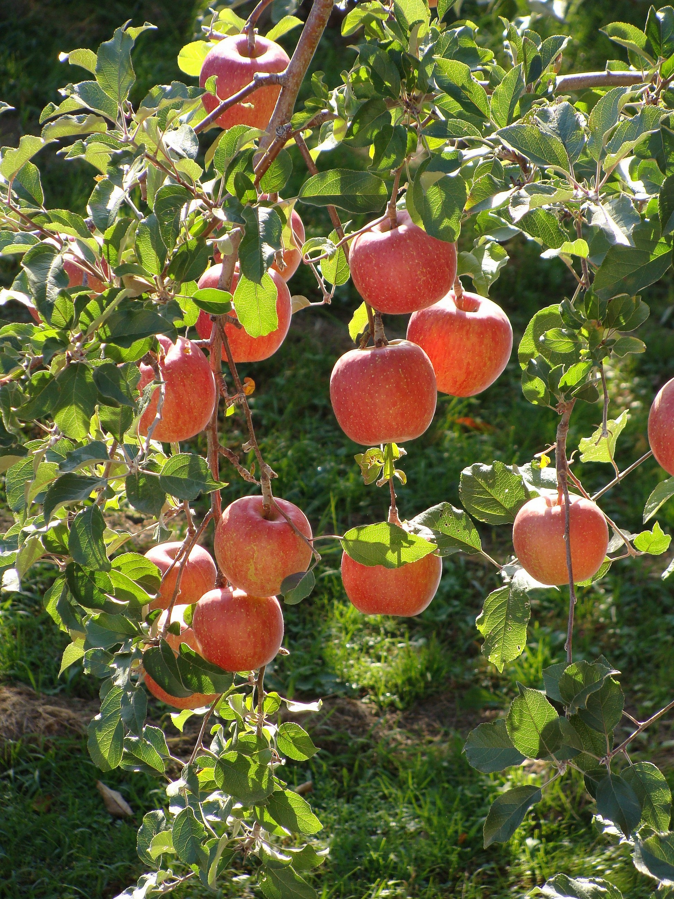

Manzanas Fuji
$1.200 CLP/kg
Manzanas Fuji frescas, de excelente calidad y sabor dulce, ideales para consumir directamente o utilizar en diferentes recetas.
Origen: Chile
Disponibilidad: Disponible
Stock: 150 kg
Prácticas sostenibles: Cultivadas utilizando prácticas responsables con el medio ambiente.
Información del producto
Descripción
Las Manzanas Fuji se caracterizan por su sabor dulce y textura crujiente. Son una alternativa fresca para complementar una alimentación saludable.
Ideas para disfrutar
Puedes consumirlas frescas, utilizarlas en ensaladas, postres o preparaciones caseras.